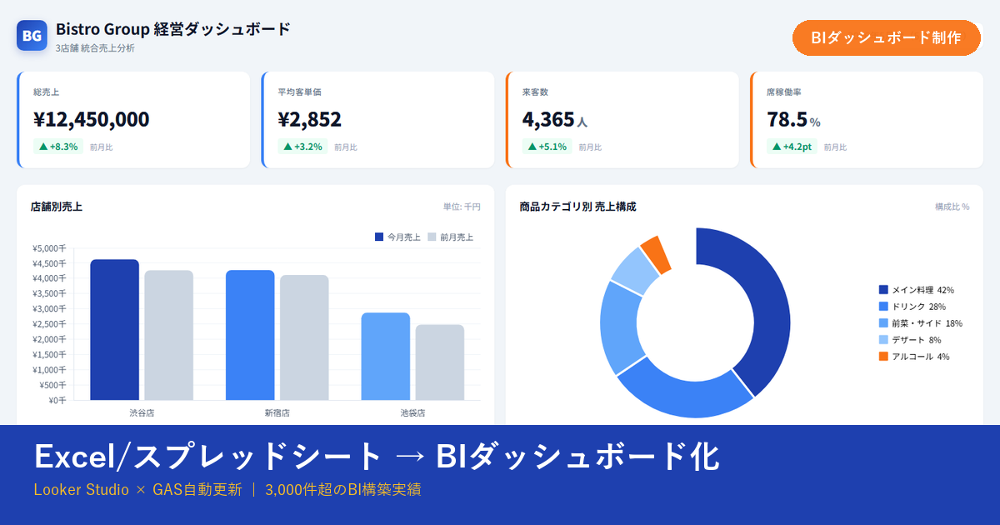
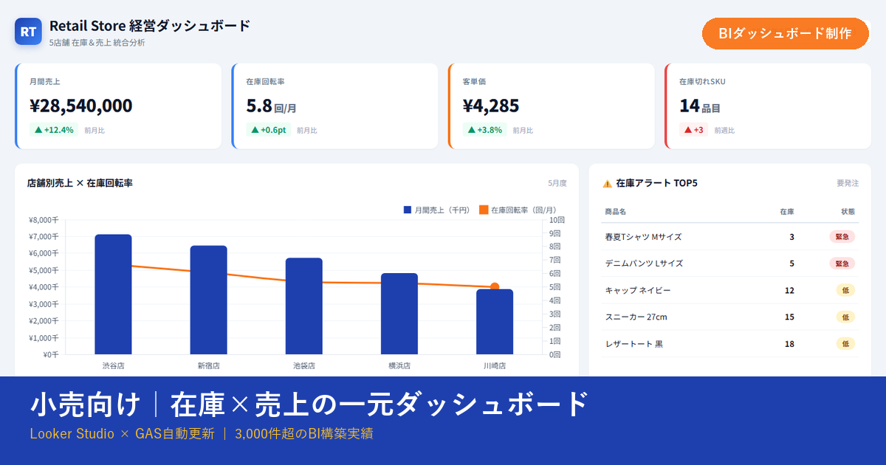
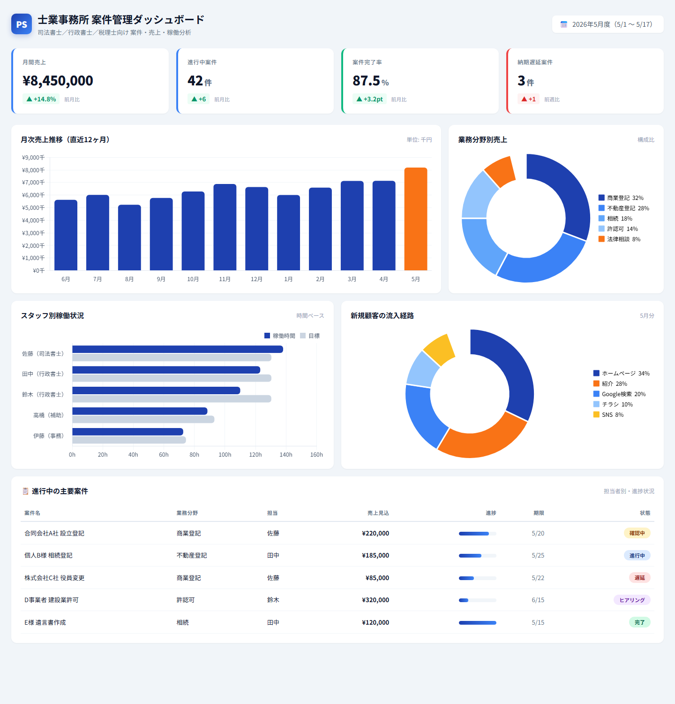

01 / Dashboard
BIダッシュボード制作
売上、在庫、顧客、案件の数字を整理し、Looker StudioやHTMLでブラウザから見られる経営画面に。 KPIカード、推移グラフ、ランキング、フィルターまで設計します。
- スポット制作 10〜20万円〜
- 月額運用サポート 3〜5万円

What I Solve
社内の数字が散らばっている、報告資料に時間がかかる、Webサイトはあるが問い合わせに繋がらない、AIを使いたいが何から始めるかわからない。 こうしたバラバラな課題は、ひとつずつ片付けても全体の流れは整いません。
Fukumaru_40は、BI・LP・自動化・AIの4領域をワンストップで支援する個人パートナーです。 現場目線と管理目線の両方から、データの集約・更新・見せ方・受注動線・運用ルールまで一緒に設計します。
Services
BIダッシュボードを軸に、LP制作・GAS自動化・AI活用支援まで、一人社長・小規模事業に必要な「数字と動線」をまとめて整えます。
01 / Dashboard
売上、在庫、顧客、案件の数字を整理し、Looker StudioやHTMLでブラウザから見られる経営画面に。 KPIカード、推移グラフ、ランキング、フィルターまで設計します。
02 / Landing Page
個人事業・サービス紹介・採用ページなど、1ページ完結のLPを設計から構築まで。 Googleフォーム連携の問い合わせ動線まで一緒に組み立てます。
03 / Automation
毎月・毎週の集計作業をGoogle Apps Scriptで自動化。 スプレッドシート更新、ファイル検知、レポート作成など、繰り返し作業を減らします。
04 / AI Workflow
ChatGPT、Claude、Geminiを使った業務フロー改善、FAQ整理、社内チャットボット設計を支援。 現場で無理なく使える形に落とし込みます。
※ 価格はあくまで目安です。データ量・要件・運用範囲によって変動します。まずは無料ヒアリングで具体的なお見積りをお出しします。
For You
「自社にとって頼めるか分からない」が一番もったいない状態です。少しでも当てはまればご相談ください。
売上・客数・在庫の集計に時間がかかっている。経営判断をもっと早く、感覚ではなく数字で。
「どんなサービスをやっているのか」を一枚で説明できるLPと、問い合わせフォームの動線を一気に整えたい。
スプレッドシート更新、レポート作成、通知作業。GASとAIで仕組み化して時間を取り戻したい。
生成AIを業務にどう組み込むか、FAQ整理、チャットボット、プロンプト整備まで実用優先で支援します。
Works
業種別のサンプルダッシュボードを用意しています。LP制作のサンプルは、いまご覧いただいているこのページそのものです。自社のデータ・ブランドに置き換えた完成イメージを具体的に確認できます。

モール別売上、購入ファネル、新規・リピーター比率を一画面に集約。
売れ筋、在庫切れ、回転率を合わせて見て、発注判断を早くします。
士業・専門サービスの案件管理、売上見込み、担当者別稼働を見える化。


Before / After
こうした状態を、データの入力・更新・可視化、Web上の見せ方、問い合わせ動線、運用ルールまで含めて整理します。 小さく始めて、使いながら育てる進め方も可能です。
Process
見たい数字、今の管理方法、利用者、希望納期を確認します。チャットでの相談も可能です。
KPI、画面構成、更新方法を整理し、どのデータをどうつなぐかを決めます。
Looker Studio、スプレッドシート、GASを組み合わせて、実データで動く状態にします。
操作方法を共有し、修正対応まで実施。必要に応じて月次運用にも切り替えられます。
BIダッシュボード制作・GAS自動化・AI業務改善
Profile
飲食・小売の現場経験と、教育業界での管理業務経験をもとに、 「きれいな画面」だけでなく、更新され続ける運用まで考えた仕組みを作ります。
FAQ
「自分のような規模でも相談していいのか」が一番多い質問です。結論、規模を問わずご相談いただけます。
もちろん可能です。むしろ、一人社長・個人事業主・小規模チームを主な対象としています。BI・LP・自動化のいずれも、小さく始めて使いながら育てる進め方ができます。
無料です。お問い合わせフォームまたはXからご連絡ください。現状のデータ・サービス・課題をお伺いして、構成案とおおよそのお見積りをお出しします。
規模によりますが、LPは2〜3週間、BIダッシュボードは3〜4週間、GAS自動化は1〜2週間が目安です。お急ぎの案件はご相談ください。
飲食・小売・教育・士業など、これまで複数業界の業務を可視化してきました。初回ヒアリングと既存資料の共有で、業界固有の用語・指標もキャッチアップしてご提案します。
はい、組み合わせのご相談を歓迎します。「LPで集めた問い合わせをスプレッドシートに集約し、ダッシュボードで確認、AIが下書き対応」のような一気通貫の設計が得意です。
初回納品から2週間の軽微な修正は無料で対応します。継続的な運用・改善が必要な場合は、月額サポートプラン（3〜5万円〜）もご用意しています。
Contact
BI・LP・GAS・AI、どれか一つでも、組み合わせでも、相談内容が固まっていなくても大丈夫です。 現在のデータ・サービス・課題をもとに、どんな形にできるか整理してご提案します。初回ヒアリング無料・全国オンライン対応・24時間以内に初回返信。